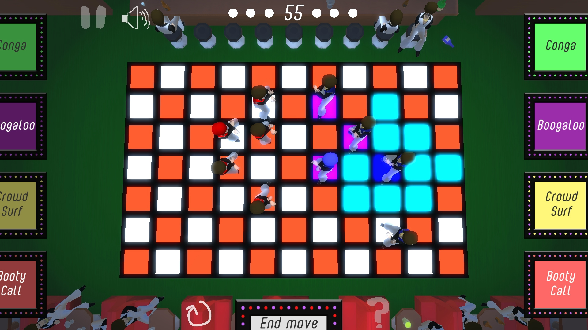
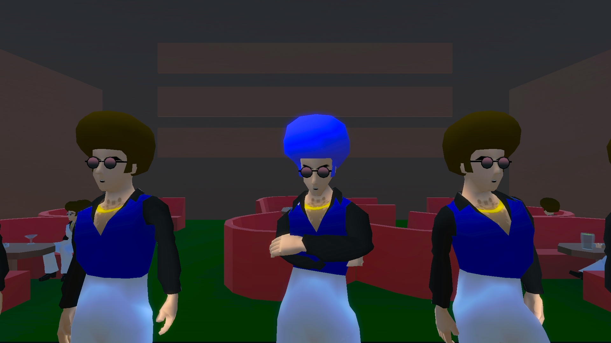
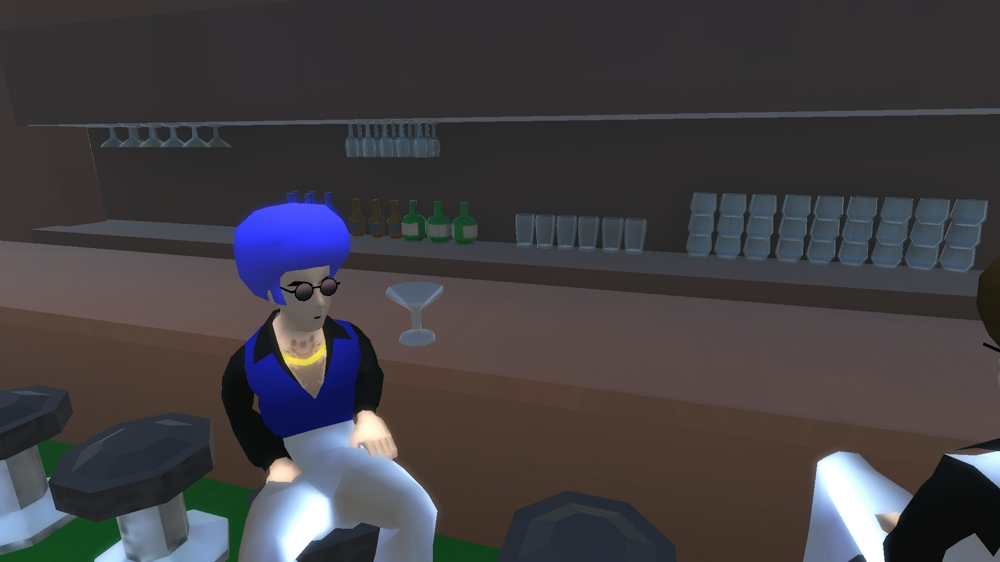
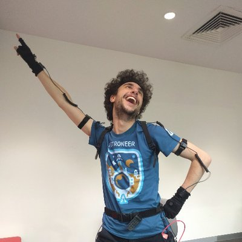
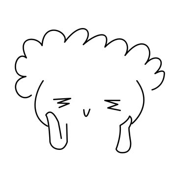

Afro Disco
Dance your friends into submission
Trailer
Hey boys, this is the game
Something something game something something fun give me your wallet.
Much wow, looks doge
  
Check out Tweets by the official Afro Disco dev team
Tweets by AfroDiscoGame
Or check out the dev teams private twitter accounts
Maxim Srour
· @MaximSrour 
David Moore
· @EqualzDee
Zac Lucarelli
· @duckpizza_ 